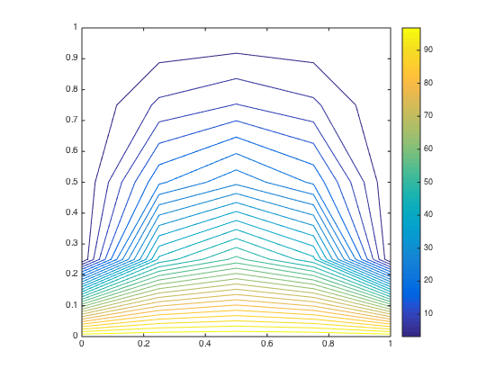
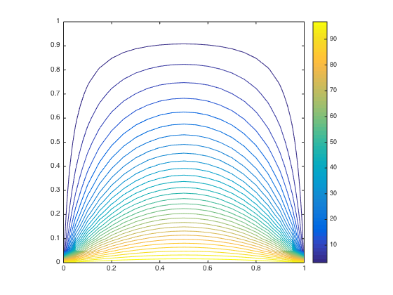

Problem3
Contents
Part (a)
A = zeros(9,9); for i=1:9; for j=1:9; if i==j A(i,j) = 1; elseif i ==1 A(i,2)=-1/4; A(i,4)=-1/4; elseif i==2 A(i,1)=-1/4; A(i,5)=-1/4; A(i,3)=-1/4; elseif i==3 A(i,2)=-1/4; A(i,6)=-1/4; elseif i==4 A(i,1)=-1/4; A(i,5)=-1/4; A(i,7)=-1/4; elseif i==5 A(i,2)=-1/4; A(i,4)=-1/4; A(i,6)=-1/4; A(i,8)=-1/4; elseif i==6 A(i,3)=-1/4; A(i,5)=-1/4; A(i,9)=-1/4; elseif i==7 A(i,4)=-1/4; A(i,8)=-1/4; elseif i==8 A(i,7)=-1/4; A(i,5)=-1/4; A(i,9)=-1/4; elseif i==9 A(i,8)=-1/4; A(i,6)=-1/4; end end end b = zeros(9,1); for i=1:9; if i<=3 b(i,1)=25; else b(i,1)=0; end end [L,U,p] = lu(A,'vector'); u = U\(L\b(p))
u =
42.8571
52.6786
42.8571
18.7500
25.0000
18.7500
7.1429
9.8214
7.1429
Part(b)
%%%%%%%%%%%%%%%%%%%%%%%% % YOU MUST CHANGE THESE VALUES!! %a_diag = 1; %a_left = -1/4; %a_right = -1/4; %a_down = -1/4; %a_up = -1/4; %%%%%%%%%%%%%%%%%%%%%%%%
N=4
A = heatmat(4); b = zeros(9,1); for i=1:9; if i<=3 b(i,1)=25; else b(i,1)=0; end end %find solution tic; [L,U,p] = lu(A,'vector'); xhat = U\(L\b(p)); %time time=toc % estimated condition number c = norm(A,1)*invnormest(L,U) % temperature (.5,.5) i=4/2; j=4/2; k=i+(j-1)*(4-1); temperature_center = xhat(k) % temperature (.25,.25) i=4/4; j=4/4; k=i+(j-1)*(4-1); temperature_center = xhat(k) % plot x=(0:4)/4; v=zeros(4+1,4+1); v(1:4+1,1)=100; v(2:4,2:4)=reshape(xhat,4-1,4-1); contour(x,x,v',30); axis equal; axis([0,1,0,1]); colorbar;
time =
0.0019
c =
9.0000
temperature_center =
25
temperature_center =
42.8571
 N=20
A = heatmat(20); b = zeros(19*19,1); for i=1:19*19; if i<=19 b(i,1)=25; else b(i,1)=0; end end %find solution tic; [L,U,p] = lu(A,'vector'); xhat = U\(L\b(p)); %time time=toc % estimated condition number c = norm(A,1)*invnormest(L,U) % temperature (.5,.5) i=20/2; j=20/2; k=i+(j-1)*(20-1); temperature_center = xhat(k) % temperature (.25,.25) i=20/4; j=20/4; k=i+(j-1)*(20-1); temperature_center = xhat(k) % plot x=(0:20)/20; v=zeros(20+1,20+1); v(1:20+1,1)=100; v(2:20,2:20)=reshape(xhat,20-1,20-1); contour(x,x,v',30); axis equal; axis([0,1,0,1]); colorbar;
time =
0.0053
c =
235.2855
temperature_center =
25.0000
temperature_center =
43.1868
 N=40
A = heatmat(40); b = zeros(39*39,1); for i=1:39*39; if i<=39 b(i,1)=25; else b(i,1)=0; end end %find solution tic; [L,U,p] = lu(A,'vector'); xhat = U\(L\b(p)); %time time=toc % estimated condition number c = norm(A,1)*invnormest(L,U) % temperature (.5,.5) i=40/2; j=40/2; k=i+(j-1)*(40-1); temperature_center = xhat(k) % temperature (.25,.25) i=40/4; j=40/4; k=i+(j-1)*(40-1); temperature_center = xhat(k) % plot x=(0:40)/40; v=zeros(40+1,40+1); v(1:40+1,1)=100; v(2:40,2:40)=reshape(xhat,40-1,40-1); contour(x,x,v',30); axis equal; axis([0,1,0,1]); colorbar;
time =
0.0738
c =
942.5293
temperature_center =
25.0000
temperature_center =
43.1988
Part(c)
The biggest N in my computer is 100
N = 100 M= (100-1)^2
A = heatmat(100); b = zeros(99*99,1); for i=1:99*99; if i<=99 b(i,1)=25; else b(i,1)=0; end end %find solution tic; [L,U,p] = lu(A,'vector'); xhat = U\(L\b(p)); %time time=toc % estimated condition number c = norm(A,1)*invnormest(L,U) % temperature (.5,.5) i=100/2; j=100/2; k=i+(j-1)*(100-1); temperature_center = xhat(k) % temperature (.25,.25) i=100/4; j=100/4; k=i+(j-1)*(100-1); temperature_center = xhat(k) %%(c)
time = 10.9721 c = 5.8932e+03 temperature_center = 25.0000 temperature_center = 43.2022
The biggest N on my computer is 1500
N=1500 M = (1500-1)^2
A = spheatmat(1500); b = zeros((1500-1)*(1500-1),1); for i=1:((1500-1)*(1500-1)); if i<=(1500) b(i,1)=25; else b(i,1)=0; end end %find solution tic; xhat = A\b; %time time=toc % temperature (.5,.5) i=1500/2; j=1500/2; k=i+(j-1)*(1500-1); temperature_center = xhat(k) % temperature (.25,.25) i=1500/4; j=1500/4; k=i+(j-1)*(1500-1); temperature_center = xhat(k)
time =
7.9941
temperature_center =
25.0001
temperature_center =
43.2033